<html><head><title>Anaesthesia</title><style>body{font-family:sans-serif;padding:20px;background:#f4f4f9}.chapter{background:white;padding:20px;margin-bottom:30px}.q{border-bottom:1px solid #ddd;padding:15px}.correct{background:#d4edda}</style></head><body><h1>Anaesthesia</h1><div class='chapter'><h2>Anaesthetic Implication of Concurrent Diseases</h2><div class='q'><p><b>Q30:</b>          ________.          –.         ? </p><div class=''>a) </div><div class='correct'>b)   </div><div class=''>c)  </div><div class=''>d)   </div><p><i> –         …%. Œ „    (   & ;  )     ...</i></p></div><div class='q'><p><b>Q31:</b>  ƒ         : Answer Key Question No. Correct Option 123  Detailed Explanations           : </p><div class=''>a) ‚ </div><div class='correct'>b)  </div><div class=''>c) ‡  </div><div class=''>d) ‰   Å</div><p><i> ƒ          ‰                   . – ...</i></p></div><div class='q'><p><b>Q32:</b>  367                         . „       („‰ )        .          Š‰, ””,           „‰ ? Answer Key Question No. Correct Option 368  Detailed Explanations </p><div class=''>a) :ƒ:Ž</div><div class=''>b) Ž:ƒ:</div><div class=''>c) ƒ:Ž:ƒ</div><div class='correct'>d) Ž:Ž:Ž</div><p><i> „‰ ,      Š‰:  —   :     Ž:Ž:Ž.        ...</i></p></div></div><div class='chapter'><h2>Complications of Anaesthesia</h2><div class='q'><p><b>Q1:</b>        ,                              ,           .        '    '       ?   --               .    -   ?          ,                       ?                  ,                       ?                             .       ,            ?                   ?           ,        .         ?                          ?            ?   --          .      /  ,     /  .       .       Å     ?            -      ?                   ?                  ?                 ?                               ?                       ?                   ?                 ___________.      ,               '       .                  ?   ,           ?   --                          .     ,         .             -          ?                      '  .              ?                   ?   --          .             ,         .                 ?                           ? </p><br><br><br><br><br>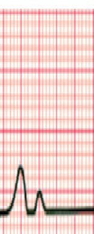<br><br><br><br><div class=''>a)  </div><div class=''>b) </div><div class='correct'>c)   </div><div class=''>d)   </div><p><i>   Å        "    "  "‰  "         ...</i></p></div><div class='q'><p><b>Q2:</b>  ƒ                      .            „             .     ? 4         Å   ‚%        -   ?                  .       -                        ?                       ?  Å                    ?             .         .  Å        -           . ‚          ƒ          ƒ. „  …  ……      ƒ      ?             ?                          ?   Å      ,       Å     .            ‚   ?    -      „           . …    Å           „ . †    ,          , ‡ˆ  /  . „ Å  Å   „         Å   ? 152                       ?             ?                   ,          ?                                        %     ?   - -          .                 ?          ,                    ?                 ?                 ?                      . Å   ,            .              ?                - - .          ?                          .              ,         .              -    ?              .           ?                      ?               ,                ?                       ? </p><div class='correct'>a)  </div><div class=''>b) </div><div class=''>c) </div><div class=''>d)  </div><p><i>                .         ...</i></p></div><div class='q'><p><b>Q3:</b>                          ?  †                      ‡?              ,                  ?  47                   .                    ? d)              .                    …    .       .                    .                            .               …? 61   ‡,  ˆ    ,  ƒ    ‰Š ƒ         ,  ,  ƒ        ‹  .  …  ,           ƒ . ‡           -          . „  …       ……    ?  97         -    ?           ÅÅ    ?        ,          ?        Å ‚ƒ    „  ‹         „  „ ?                 ?             /Å‚,  ƒ       .                ?        -                ?      -                 ?                 ?                             .           ?                      ?                    . Å       .        ,   ‚      . ƒ         ?  „               .              ?              ? d)                    . ‚ƒ       ,   „…†        . ‡                          ˆƒ  .                ? 332   348     Å      .  Å       ,          .     ‚ Å              ?  - -                               .     Å -  .                         ?                          ?                            ? </p><br><br><div class=''>a)  </div><div class=''>b)  </div><div class=''>c) Å </div><div class='correct'>d) Å  </div><p><i>         „.          † '   ...</i></p></div><div class='q'><p><b>Q4:</b>     "   "           Š‹Š     Œ               .       ?                          ? 15   29  ‚ƒ- -       „           .    …      †            ?                          ?                        ? 62   75            † '  ?  „ … †   …   …    †   … -       …          .           … ?               ? 113       Å        ? 137    çç--       „        .     Ž/       ŽŽ/  .    ‹   .    Å   Å     ?                  ? 175          ? 184                 ? 200                  ? 217    Å- -             .             ? 234                     ? 249              ? 268   ƒ        ? 284   297     †             ___________.              - - .                Å      Å             ‚  ? 313  b)                   -  -     ?            '    '    Å   .       „       Å     .           ?         ‚ƒ                   .                     359  ?  380                ƒ         „    ?  ‚ƒ--        „ …†  . ‡    ˆ‰        -  . ‡   Š‰.‰-   „ .  399                 ? </p><br>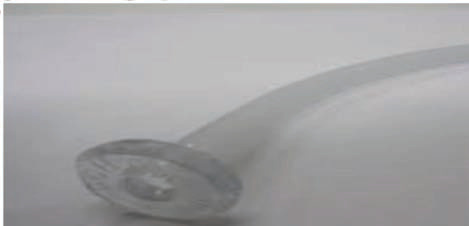<br>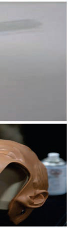<br><br><br><br><div class=''>a) ‹, Š  ‰</div><div class=''>b) ‹  </div><div class=''>c) ˆ, Œ  ‰</div><div class='correct'>d) ˆ, ‹, Œ  ‰</div><p><i> ‚ …          Š•Å.             ...</i></p></div><div class='q'><p><b>Q5:</b>      Å, çŽÅ,       ? 5                          -   (-)   ?                            ˆ ?                       .   ,    Å  ‚  ƒ    .                   „ ?              ?    ê    ƒ     _______.               ? 98                 ‡       . ˆ        ‰ ,           ‰?   …†- -  Å        Å       . ‡       Å    . ‡            Å  .            Å    „ˆ  Å?  153   çç--       „        .     Ž/       ŽŽ/  .    ‹   . ƒ   ‹  Å    ÅÅ„‹.       Å      ?   …--                       . ‰          .       ?                       ?  ††--                    . Å          .             ?                     ƒ   ?                  ?                  ,             .                 ?                                   ?  ƒ                  ?  „           ,         ’  .               ?         ƒ„, Å         …        ’  ….   Å      „ ’        …        .          ?                       ?              ? 349               .       †    ?   ‡--   , ˆ ‚‰‚,          .               ,         „?             : </p><br><br><br><br><div class=''>a) Å   </div><div class=''>b) ç    </div><div class=''>c)      </div><div class='correct'>d) ‡ </div><p><i>   Å çŽÅ                   ...</i></p></div><div class='q'><p><b>Q6:</b>        ?                   Œ   ?  Œ                        .                ? 30      ,                 ? 48     … Š          ‹Œ ?   ’    ƒ            .      ƒ   ,      ê     ƒ  ƒ  ?      †  …:             ?  ‰    Š†- -  Å       . ‡            Å           . ‹ Å‚ÅÅ   ,         Å  ?   çç--        „        .     Žè/        è/  .    ‹   .    Å   Å     ? 154       ,                ?  „ ‰Š             ‹  .         ŒçŠ             . ‡  ,                   .            ?                   ?     †    ,                   ?                   .                 ?                  ? 250              -  ?                  ,                        . ƒ           ?                 ? 298   ˆ  ‰   …,           ?  ê                    .                           -     ?                ?  ˆ     -  Å             . …  Å             .               ƒ    ?   Œ--   , ˆç ‰,     ‰Š‹Š,     Ž            ,  ,       . è ê   ,                 -      .           ƒ    ?    -                 ,                       ? </p><br><br><div class=''>a) Ž </div><div class='correct'>b)   </div><div class=''>c) è </div><div class=''>d) ‡ </div><p><i>        çŽÅ           .       ...</i></p></div><div class='q'><p><b>Q7:</b>  ‘ ççŽ,                                 .    ?         ’  . Ž  Å  ,                             .    ‡      ?                      ?       ,                  ?  63        … ç              _________.   ˆ--  “     ƒ . „        ƒ  ƒ  ?  „                 .     …  ‡             †  .        …  …    †      ?      ‹           ?  ƒ     -  ,         Å   Å  ?   --      Å       ‹   Å    .      ê/      Å   .      Å     ? 155                    ?  è                       êè                            .                  ?                        ?                                        %     ?                          ?  ƒ  -      Œ                           .              ?  ‚    -  ,             .                Å  ?                 .  „ ‚‰- -       †      .                        ?       …        . ˆ     , Å ‰      - .               ?               -     ? 333    Å   Å  Å              ?  „          ,                . ‰           .           Å         ? 360             ê                ? 381                     ? </p><br><br><br><div class=''>a) …Žê & ; Š‘</div><div class='correct'>b)     </div><div class=''>c) ’     </div><div class=''>d)  & ; ƒ‘ </div><p><i> ‡               ‡ ˆ   ççŽ.         ...</i></p></div><div class='q'><p><b>Q8:</b>        "’  "?  16   è--         ê  ‹‘  .      Å        ?  Œ                                . Œ     ˆ  †               .            ?  …       „  †           „. …                      .        ?  Å                Š      ?  76   ˆÅ--   ƒ  •      …. ‚           “                 . „      …    ƒ “     ?  99            ?                 ? 114   138        ,      Å             ç   ?   --      „   „    Å  „   Å ,    ,    .                  Žç/è  .    ‹   .       Å „„?                  ? 176   185                          '    '                 ?                 ? 201                             ? 218   235    -         .             ?                     ?                          .    Å        .            269            ?              ‹      Œ  __________ 285   Œ    ,                     ‹ç   ?  314        Å    ‰   …  .                    ?               -        ?     Å        „             ? 350   Å                   .               ( ).             ?   --                        . è ê   ,  ê   -   ‡    .        „           ?  400                ? </p>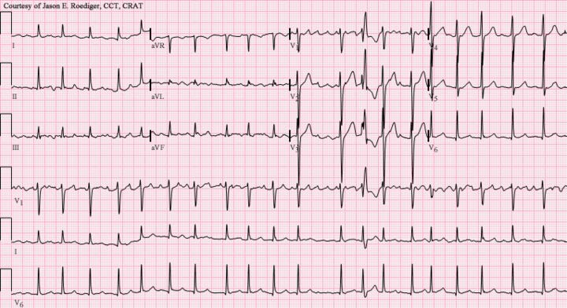<br><div class=''>a) †   </div><div class=''>b)    </div><div class=''>c)     </div><div class='correct'>d) ê  </div><p><i> ‚    ’  .          ˜ ™         ...</i></p></div><div class='q'><p><b>Q9:</b>           Œ   è ? 6                   Å  .      Å     ?                 ,                    ?         ,                  -   † („ †)?  ŒŒ   ,    -    .               . ‚   ,  ŠÅ     çè     Š  ÅÅÅ  .         ‡            . Å          ?  „         …  ƒ  ?       †           … ?                ?  ‹    Å   ,               ?          „   „    Å      .      Ž/      Žç/è  .       .      Å     ? 156   ’                .             ?          ?                ?  ç   Ž                   .                ?   - -  „        ….                 ?  ƒ                     .  Å‹‹    .                    ? 251             Å  ?  ƒ                       ?                         ?               ,         Å      ?   †‚--        „-                ††‘ ’   . ˆ–                               .                  ?         „       Å     .    Å              ? 351   ç- -     Å            ƒ.Ž  /      .              ?  ‘       ’                    .                 ?  “           ”                            ”.    ”          ? </p><br>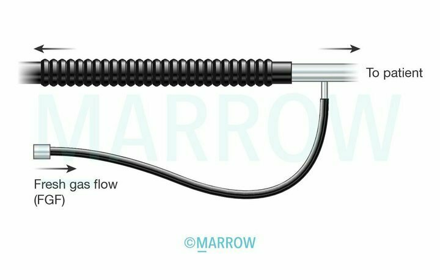<br><br><br>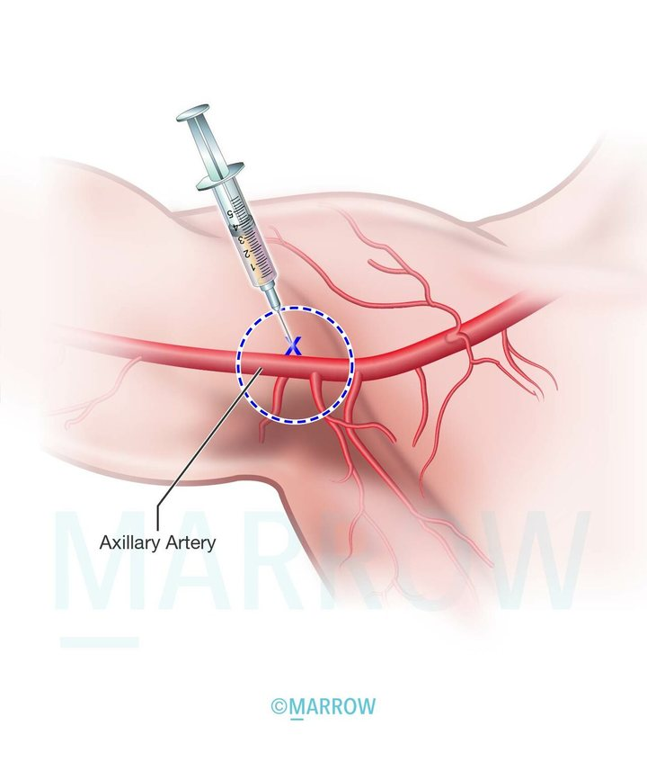<br><div class=''>a)   </div><div class='correct'>b) ’  </div><div class=''>c)    </div><div class=''>d)    </div><p><i> ‚ ê      Œ   è   •. ‚ ê   ,  ‰     „...</i></p></div><div class='q'><p><b>Q10:</b>  ê                ? Answer Key Question No. Correct Option Detailed Explanations   ’è--              .       -Å Å            ƒ           .            Å     ?                       (…)    .              ? 31                        „  †   .                   ? 49             ? 64   „        …            ƒ? 77    ‰Š- -                    …          †  .      …    …    †    ? 100   ˆ‘            ‡  è’ˆ.                       ?              ?   è--    „ „ ‘    „ „     „      .       „    Å   ,  ,      „  .    ‹   . „  „         „      ? 157   “       ,                .        ,           ? Answer Key Question No. Correct Option 177  Detailed Explanations                ƒ                   ? 186                        ?               ,         -              .                         ?   -                    (†‡). ˆ           ‰ .   ,              ,      , ˆ-    ,       . ˆ                    .            „         ?                   . ƒ    Œ   ,       Ž                . ê            .      Ž           ?              .       ,               .       ?  ƒ                          ,              ?  „                        .                ? 299                ,           Å  ‚         ?                   ?     Å           .          ‚     ?                  .       †   ?                           ?  “              . “      ”             .                ‹Œ ? </p><br><br><div class=''>a) ‡    </div><div class='correct'>b)   </div><div class=''>c) </div><div class=''>d) </div><p><i> ê     ‘ ,   Š   •– ç. ê   ,      “  , †...</i></p></div><div class='q'><p><b>Q11:</b>                    ? 17                †?                      ? 50                  ˆ ______.  „  … … …                    ƒ?           ‹   †  ,        …           ?  ˆ            ,                 ?               -  ?  „    Å      „  „ Å     „„ „‹?                    ?                -  ?             -    Ž        .                  ? 219                         .                 ? 236           -        ?    Å        ?  Å               .        ,                ?  „       Ž              .                              .          ?      ‘ ,                ‰   …   ? 315   Š                 ˆ. %      ,         ,   ,  .        ? 334   ‰- -            .                .    Å          ‚?  êê- -                 †      .          Å                 ? 361                     ,           ? 382         ”          . ‡              ”  Œ‘%        (…è ). ‡    ƒ‘ .                •   _____. 401  </p><br><br><br><br><div class=''>a) Œ</div><div class='correct'>b) Š</div><div class=''>c) ƒ.‰</div><div class=''>d) ‰.‚</div><p><i> ”           .     Œ    Å      ...</i></p></div><div class='q'><p><b>Q12:</b>        Ň     .             ?          ,           „‰       ?                      ?                        ? 65  Answer Key Question No. Correct Option Detailed Explanations  „            ƒ   …     ƒ ?     †  ,  … †   …       †      .              ?               ? 115   139   Ž- -                     . ’    Å    .        ‚   Å  Å ?  „ Å  Å      „„    „ „      „„ „‹ (ˆ)?         ,     '      . „    -,         .               ?  Œ--             .               ? 202                     ?                 .              ?                       ?  270               .     Å          .     ‰Š‹/ , ˆ Œ‹/ç‹ ,       .                 ?  286  ƒ                    -        ?           †             †       (……/…èŽ   )    ?                      ‰   …    ?                     .   †ƒ   ,         ,   ,  .       ?                    .               Å   ? Answer Key 352  Question No. Correct Option Detailed Explanations                           ?  …          ,                   ?        –    êç              </p><br><br><br>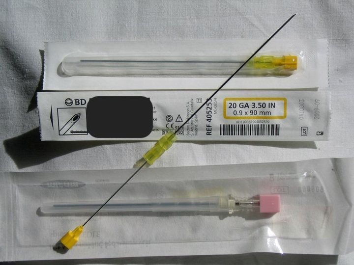<br><div class=''>a) ˆ‘%</div><div class='correct'>b) ‹‘%</div><div class=''>c) ˆ‰%</div><div class=''>d) ‹‰%</div><p><i>      ‡              .  è       ...</i></p></div><div class='q'><p><b>Q13:</b>                      ?            ,               ?                          .                  ? 51    ’Å-- …  ƒ     … …      ƒ    . ˜    ƒ ,  -  ƒ     . –,        ˆÅ%  ƒ      ƒ     … . „  ƒ      ?  101                  . ç      †     †     .                      Å     †       †       ? Answer Key Question No. Correct Option Detailed Explanations  Œ    ‰         ,              .               ,         .                    ?  ƒ       Å    .  „    „  „ „        „   „ „ ?  ’                                 -          . ‘             .         ?              ç-        ?                     ? 220                        ?  252  ƒ „- -      ç Š    .    -  ˆ ˆ              ?        Å           Å      .            ?  ƒ           è,               ‚ .           :  „     ˆê          . Åç    ,         Ž‘‚  ’‚%. ‡           .             ?                   ….          ’   ?                 ˆ. %      .        — ,                  ™    .   ‡•  –ƒ/ƒ  .         ?  ’Ž- -          .        †     ?              ,        „  ?  Š‘-- -              . è           —Žè.    , ‰‰%        (…è )     -   .           –                 ‚‰ ? </p><br><br><div class=''>a) ‹‹.Œ </div><div class=''>b) ˆ‹.‰ </div><div class='correct'>c) ˆŒ.Š </div><div class=''>d) ˆ‰.Œ </div><p><i> •             .            ...</i></p></div><div class='q'><p><b>Q14:</b>                    ?  32                                  ˆ           ?  „                            ? 52    ‹--     ,     ‰Š. ‡     …     ƒ   .  …           . „  78  …      ƒ … ?  ç      ÅÅ%, …Å%,   „…% ‰   ‰        ( Š ˆ)  116   ƒ      ,           ,    ‚     Å     ? 140       „  „ Å „ „   „  ? 158                        ? 187                 ?     -                ,                .                                 ?  237                   ?  “ˆ ˆ              -  ,       .            Ž:              Å  ?  ƒ                 -   ?  300  „                ,   ,            .            ?                  Å ? 316      -                        .      —          .     ,    ’ „‘     •”   ,  ’”Š         .               ?  ’Ž- -              .   ,        (‰)         .              ?   Å--                        .        „   ?               ? </p><br><br><br><div class='correct'>a)   </div><div class=''>b) † </div><div class=''>c) </div><div class=''>d) ‡  </div><p><i> ”                ‡   ,   . ...</i></p></div><div class='q'><p><b>Q15:</b>   ƒ--         ‡       „             Å .     Å  ? 18   Œ     ê                         .                          ?                    .                    ? Answer Key Question No. Correct Option 53  Detailed Explanations   ˆ-- …  …   •        …          . ‚          …          ƒ   “   ƒ . „         …    “ ?  ˆ               .      Š- -         . ‚Å  ,            . ‰    Å       .               ƒ•   ,       ƒ•  .                  ?   Œ--           „ „  Å ‹ „       .      , „    „   ,        .            ?                                                ?  ŽŠ--            ‰             . è                      .               ?   Œ‹- -               .        ê       .         ?               ?   ˆ        „„- -        .                ?                     .                     Ž? 271   ’      ‚          ,       ? 287   „     “      . “    ‰       †       .                 ?          -         ?  335                    ,  ,         ç   -  .                 ?  362  è•- -         –  –                 .                “‚                        ?  383          ç•            . è ê   ,    “  ‚‡Œ/–      ‡ÅÅ / .   ‰Š‹Š         .           „       ?  ‹Š--                  . ‡                       .             .      402  –         ? </p><br><br><br><br><div class='correct'>a)  Œ‘</div><div class=''>b)  ƒ‘</div><div class=''>c) ‡  </div><div class=''>d) † </div><p><i> • ‡     Å       (“ ),     ,       ...</i></p></div><div class='q'><p><b>Q16:</b>   --  Å  ,       ,     Å    .     Å           ?               ,     ê         „„‰   ˆ      . ‘    β    „„‰.     ?  ‚  … “     ƒ   ƒ ?  ‰  –                     .  ‰,   ‹                -        Š     .      Š            ? 117      ‡ ç†ç†       „      ˆ ,       Å    ?   è--        „     „ „  Å ‹    „  .      , „    „          Å    .     ? 159                       ?       -   ,     '      ç.† /.              ? 203                             .                 ? 221     -      ‚Š            . ç  „            .           ?                    ? 253                      ?          è            . Œ                    . Œ           . Ž        . ƒ      ?           ?         ƒ„, Å         •              .      …Å         ? 317   Œ           .                 (     )                ?  ç- -             .           Å  †         .                   ?   çÅ--                .             ?             ? </p><div class=''>a)    </div><div class='correct'>b) ‰% </div><div class=''>c)   </div><div class=''>d) Š% </div><p><i>   Å                  . Š: Ž      ...</i></p></div><div class='q'><p><b>Q17:</b>               ƒ…-   ?               . ‘               .                              „„‰   .                ? 33              . „  ƒ     …       ƒ    ƒ ? 79               ?   è- -    Å        Å .   Å    . ‚Å  ,       . ‰ ÅÅ   Å     .        Å            ç   ? 141   ”  Å  „    „           „ „ ,        Å    .           ?                  ?                     ?                    ?                       ? 238                       ˆ ?             ?                         ‚  . ê   ,              . ƒ         ?  „ -                  ˆê. “                    . „         ,      .               ? 301                ,          Å ‚        ?                         ?  ‚ , êê- -                   .           .                ?                    ?  Š‹--                  .          .                      ? </p>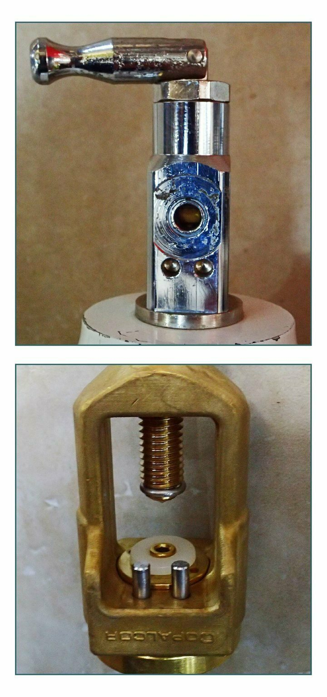<br>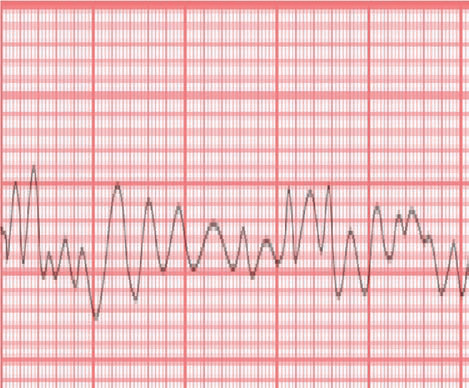<br><br><br><br><br><div class=''>a)  +</div><div class='correct'>b)  –</div><div class=''>c) … +</div><div class=''>d) … –</div><p><i>        ƒ…    .     „„‰           ...</i></p></div><div class='q'><p><b>Q18:</b>   …--               . ˆ       Å    .                       Å    ?           ,                    ?  „           ……      ê      •  ƒ ?         ‰    Œ ˆ    ? 118               . ‡ „    ,     Š†  Å .       ç  –†%    ‚        ,        Å .    ‚     Å  Å ?  ” ‹ • Å  Å       ‹ „  Å  . „„     –…    ,      ?                           ? 188                   ?                ?           ,               .          ?                     ?  †    ,               .        Å   ?  ƒ            ?               ?             è                .              …?      -           …Œ,            .                      ? 336   èç- -             .    †          ? 363    ‡--      Ž               . … —…               .              „       ? 384                     .                         ˆ‘     …„'.    ,       . ‡           .            ? 403  </p><div class=''>a) …    </div><div class=''>b)     </div><div class='correct'>c)      </div><div class=''>d) - ‡ </div><p><i>             è––            ...</i></p></div><div class='q'><p><b>Q19:</b>        Å           ƒƒ--          Å ,          19              ,            † (ç)  ?  „  ……        •    ƒ          …   ?  –               ‰         ?   …- -                       .           .  ç Å   ,  Å          Å.             ?  160  „ Å  Å       ‹ Å „   „ „  ‹„ ?  „ ‚--                  ƒ         Š.‚  / . ‡   ,       . è   –   .              ?  ‘Ž--                         . ˆ    -    ,         Ž-     .                 ?   ˆ‹- -                 ,    ,     .  ‡  Š‰ /Š        Šˆ /. ‹Œ-          ƒ‘          .        .              ?                     ?  “              ___________. 254                                  ? 272   ƒ            ? 288   „                   ________.                     -         è   .  …       Å                              318   .       Å                Å         ?         -  -     (è)       .          è           ?  êê- -    Å            .  Œ       ‰‹ƒ    .               ?                      ?               ( …„)       . …    ,          …„     _______. </p>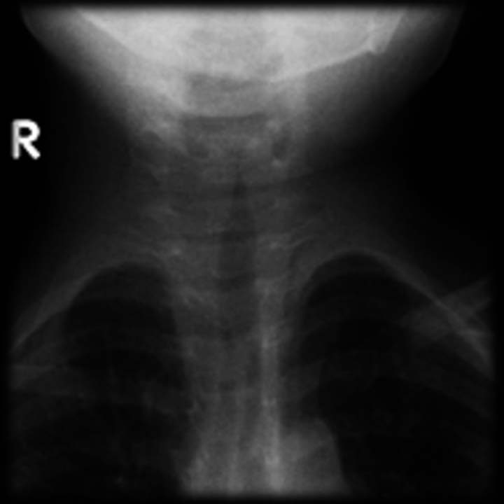<br><div class=''>a) ‹‘°„</div><div class=''>b) ‚°„</div><div class=''>c) ‹Œ°„</div><div class='correct'>d) Šƒ°„</div><p><i> “   Å       Å     • ƒ     ê  • è ...</i></p></div><div class='q'><p><b>Q20:</b>           Å                 ?                         ?        -    :  ˆ     ‡ ,              ?  ‰             .     Å  Å     , ‚   ,   ƒ•  ,  Å  Œç  “      Œ˜†/Å .    -    Å     ™     ‡ ç†ç† “       Å        ? Answer Key 142  Question No. Correct Option Detailed Explanations  „ Å  Å            ˆ?  ‡  -    ,                ”         . è            . è                ”Š.          ?  204        ’         . è -         … ê.               ?  222       Ž                     .          ’Œ/  “/.          Ž   ?                  ?                 ?  ‚                Å  ?  ƒ               ? Answer Key Question No. Correct Option 289  Detailed Explanations          __________                 Å.         Å      ’ Å    …  ?   --        ‰ÅŒ  „š‰    . Š                 .                        ?               “é è’  .               ?   --                        .        .         .         ,         ?                  ? </p><div class=''>a)     </div><div class='correct'>b)      </div><div class=''>c) Å ˜  </div><div class=''>d)   </div><p><i> •   ,      è          ;    Å    ...</i></p></div><div class='q'><p><b>Q21:</b>  †   —                                Ž.                    Å  ?                        ç.                         ? 34   ‚       …   : 80                 ?  ‚ „ „   ,     Å      Å  ?        ‡    ”Š,        /     ?             ,              ,  ,     ,         .          ?                        ?  ’…             ? 239                        .                  ?  èê-  -                   .          .               ?              ________. 302    ™- -         Å                .         ‚       ?                               ?  èƒ- -                  . …         .               ?  385         ,                ?  -                   ? </p><div class=''>a)   </div><div class=''>b)      </div><div class='correct'>c)      </div><div class=''>d) Å ˜  </div><p><i> “   Å            • è     /    /...</i></p></div><div class='q'><p><b>Q22:</b>   è--             .                 Å     è  .  ,           ?                     ?  ‚       ƒ   _________ 81   ’              . 119   „ Å  Å     „      ‹   „ ?  189      „–„-–                ?  ˆ        ,                     ?              Œ       .            ‹  . ‘                 •                    .               ?                  ?                 ?                       ?                      _____.   “- - Å  è„–‹        . Œ             .          …                 ….          … ? 319  Answer Key Question No. Correct Option 320  Detailed Explanations  ê     ç--            . ê     „      …   •  Š  („ …•Š)        .               ? 337   364                               ?                    ?  ê     ,          : 404  </p><br>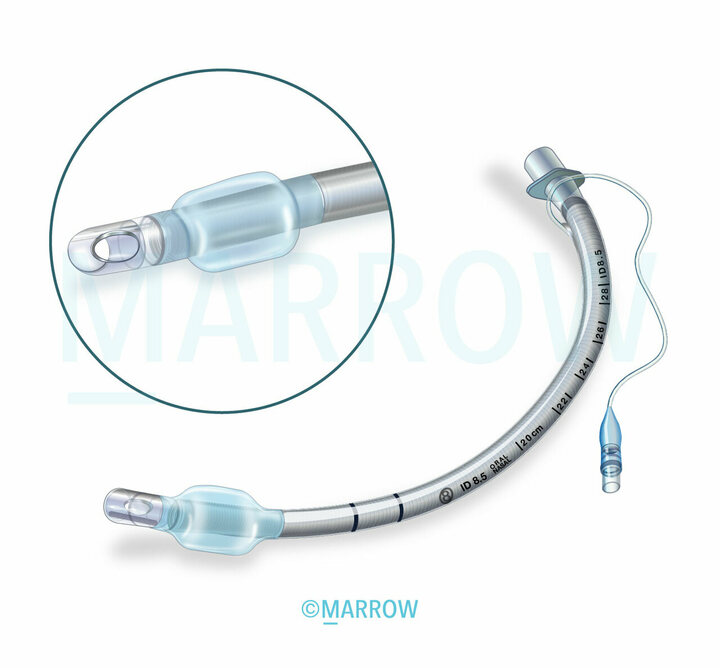<br><div class=''>a) ‹‘%</div><div class=''>b) Œ‘%</div><div class='correct'>c) ƒ‘%</div><div class=''>d) ˆ‘‘%</div><p><i>            -ƒ    .      Å  ...</i></p></div><div class='q'><p><b>Q23:</b>                    __________ 20  Answer Key Question No. Correct Option Detailed Explanations 21                      ?  „            ƒ   ƒ ? Answer Key Question No. Correct Option 82  Detailed Explanations  –      ’       ‹     Å „ „  Å      ÅÅ„‹? 161                           ?                             ? 205   ‘              ? 223                   ? Answer Key Question No. Correct Option 240  Detailed Explanations  ƒ                          „/ / . „•    ,           ,               .         ? 255   ’ç-  -            .      “        - Å    ? 273             ê      ?  Œ                       ? Answer Key Question No. Correct Option 338  Detailed Explanations  ƒè- -           .                          ?   ”- -      è     ’ ,  -    . è     ê   ,   -      Ž™š.     ,         .                   ?  ê                  </p><br><div class=''>a) †   </div><div class=''>b) Å    </div><div class=''>c) -  ”</div><div class='correct'>d)    </div><p><i> Å    Å Å    Å    Å  .  ,        ...</i></p></div><div class='q'><p><b>Q24:</b>                '  ?                ‰‹         ? 120    „      Å   „ „ ‚ — Å „‹  Å    „„  (†… ).                ?  ’           -            .           ?              •                   “ ?              ?           ,              ,  ,    . †            . ‹’‹           . ƒ                  ?                    ?  ‘-         _______. Answer Key Question No. Correct Option 303  Detailed Explanations                           ?                         ? 386                 </p><div class=''>a) † </div><div class=''>b) ‡</div><div class='correct'>c) ‡  </div><div class=''>d) </div><p><i> 45  '                       .         ...</i></p></div><div class='q'><p><b>Q25:</b>  Œ            .  ˆ     ‰,              ? 35  Answer Key Question No. Correct Option 36  Detailed Explanations      ‹ ‰‹      –.                 ?  ”  Å  ˆ       Œ- ‘   . …       Å  ‹          „ -   . ‰  ’ „‹ ,     ‹  .    „-ÅÅ   Å   „  ‹   „ ? Answer Key Question No. Correct Option 162  Detailed Explanations  „ ‰”--                     . ‘           .              ? 190  Answer Key Question No. Correct Option Detailed Explanations  ‹                         . ê                  :  †                              ? Answer Key Question No. Correct Option 224  Detailed Explanations                            ?                      ?  „ †   ,      Å                  .              .      Å         ? 365                        ?                  </p><br><div class=''>a) </div><div class='correct'>b) † </div><div class=''>c) ‡  </div><div class=''>d) </div><p><i> ’.ƒ   ‘              ˆ  . …           ...</i></p></div><div class='q'><p><b>Q26:</b>                  ‰  ?  ’           „,              .          ?                ‡ ?                ?                        ,        . “                     ?                    ? Answer Key Question No. Correct Option 387  Detailed Explanations                              ? 405  </p><br><div class='correct'>a)   </div><div class=''>b) </div><div class=''>c) — </div><div class=''>d) ™ </div><p><i> –              ‰   •Å  „Å. –  ‰  ‰    ‰...</i></p></div><div class='q'><p><b>Q27:</b>  ˆ       ,       ‰         .                ‰? 121        ”ê,            ‚             -  .              ? 206                     ? 256          Å     ? 274  Answer Key Question No. Correct Option Detailed Explanations 275   ˜ç- -                 . Š      ,       .             ?                 ? </p><div class=''>a) è    </div><div class=''>b) ‡  </div><div class=''>c) —   </div><div class='correct'>d)    </div><p><i>        ( è“)    ‰ ,  ‰. –      ...</i></p></div><div class='q'><p><b>Q28:</b>               ‰      ?                      .                   ? Answer Key Question No. Correct Option 207  Detailed Explanations                  ? Answer Key Question No. Correct Option 257  Detailed Explanations  366                Å      ?                   ? </p><br><div class='correct'>a) ‡</div><div class=''>b)  </div><div class=''>c) Ž </div><div class=''>d) —        </div><p><i>    ‰             ( & ;è   & ; ). ‰    ...</i></p></div><div class='q'><p><b>Q29:</b>  –           „  122   Žè- -                      .                  . …             .        †   ?                       ? Answer Key Question No. Correct Option 406  Detailed Explanations </p><div class=''>a) è     </div><div class='correct'>b)            </div><div class=''>c) „      </div><div class=''>d)     </div><p><i> –           „  ‚+ç . „         ...</i></p></div></div></body></html>